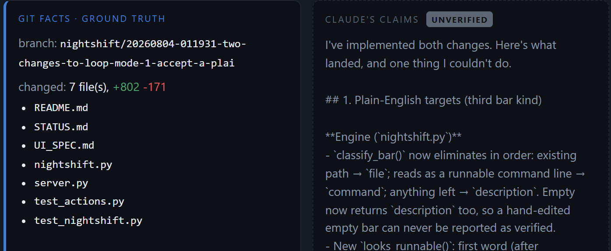

Windows desktop app · runs on your machine
Coding jobs run overnight. Checked against git in the morning.
Nightshift works through your queue with Claude Code while you sleep, then shows what actually changed beside what the assistant says it changed.

What it does
FactYou write down the jobs you want done, in plain sentences, and drag them into the order they should run.
Nightshift runs them one at a time, each on its own git branch. When Claude Code hits its usage limit, it waits the limit out and picks up where it stopped.
One page, every job. Keep the work, discard it, or send it back to be tried again. Nothing is merged unless you say so, and discarding deletes nothing.
It runs on your own computer — no terminal to open and no account to make. You need git and Claude Code installed already.
Why it works this way
FactAn assistant can report success and have changed nothing.
So the report keeps two things apart. Git records what changed on disk, which can be checked. The assistant's account of its own work cannot.
Claims are drawn dashed and labelled UNVERIFIED every time — including when they turn out to be true. And when a job reports success with an empty change, Nightshift holds it for review instead of merging it.
Where it stands
FactRelease is close.
The engine and the app are built and tested, and they have run real jobs unattended, night after night. What is left is a polish pass and signing the build so Windows stops warning about it on first launch.
- WorkingQueue, overnight runner, morning dashboard, keep and discard
- Not yetA download — the build is unsigned and not published anywhere
- Not yetA price, a licence, or a way to buy it
- Not yetOutside users, so there is nothing to quote and no numbers worth showing
- Not yetA release date
What happens next
UnverifiedIt'll be ready when the morning report is boring.
A claim, not a fact — so it sits under a dashed rule like every other claim. When there is something to download, this page will say so and that rule will be solid.